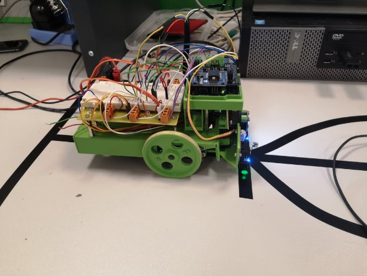
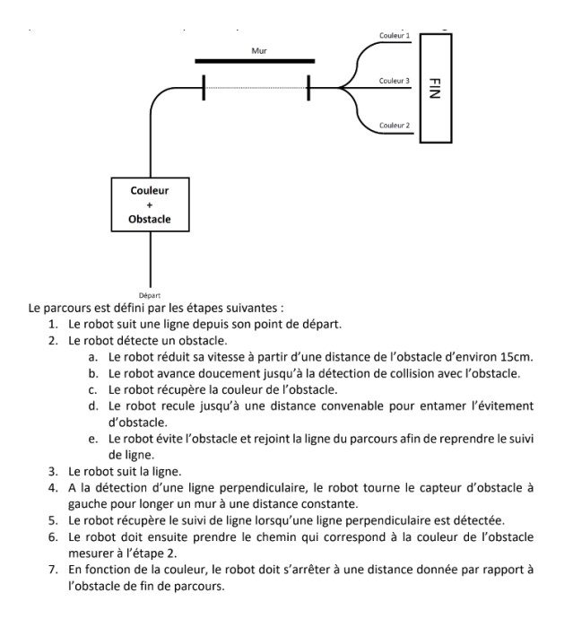

Le projet vise à concevoir un système intelligent pour un robot mobile capable d'exécuter un scénario spécifique. Le robot sera équipé de capteurs numériques et analogiques, certains intégrés et d'autres ajoutés. Les données des capteurs seront traitées par une carte Arduino Uno pour accomplir les tâches requises par le scénario.
Voici une liste des composants principaux utilisés pour ce projet :
Pour notre projet de robot suiveur de ligne, nous avons sélectionné des capteurs spécialement adaptés à nos besoins. Parmi ceux-ci, nous avons utilisé le suiveur de ligne Melinergb pour détecter et suivre précisément la ligne, un contacteur qui fonctionne comme un interrupteur changeant d'état lorsqu'il est activé, ainsi qu'un télémètre pour mesurer les distances. De plus, nous avons intégré deux moteurs pour contrôler les mouvements du robot. Après avoir sélectionné ces composants, nous avons entrepris de les programmer individuellement pour qu'ils interagissent de manière harmonieuse selon nos exigences. Notre approche a été méthodique, progressant étape par étape pour assurer le bon fonctionnement de chaque composant du robot. Cette méthodologie nous a permis de procéder de manière progressive, avec des tests et ajustements réguliers à chaque étape, garantissant ainsi la performance optimale du robot suiveur de ligne.
Dans le cadre de ce projet de robot suiveur de ligne, j'ai acquis une meilleure compréhension du fonctionnement de l'I2C. Grâce à cette connaissance que nous avons pu approfondie, nous avons pu mettre en pratique nos compétences en programmation Arduino. Et continuer de travailler dans ce robot suiveur de ligne. L'un des aspects les plus intéressants de ce projet a été la participation à un concours, où nous avons eu l'opportunité de mettre en compétition notre robot suiveur de ligne contre les mêmes robots avec un code diffèrent. Grâce à nos efforts nous avons optimiser les performances de notre robot et nous avons réussi à avoir la première place pour ce concours. Au-delà des résultats du concours, ce projet nous a permis d’améliorer nos compétences en matière de résolution et de problèmes, de logique et de pensée créative. Ce projet de robot suiveur de ligne nous a permis de mettre en théorie et en pratique nos connaissances en Arduino, d'explorer les différentes capacités de l'I2C. Je suis fier des résultats que nous avons obtenus et de notre engagement à optimiser notre robot.